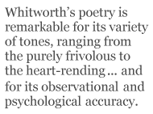

John Whitworth is perhaps not so easily categorisable as some of the more caustic reviewers — and even some of his admirers — seem to think. It is true that in interviews, articles, reviews and in some of his more autobiographical poems we do get the sense of a clearly recognisable persona, with well-defined views on poetry and on certain areas of politics. This is the voice that growls at the reader in “The Middle-Sized Poem”:
But I’m a poet. One or two
There are doubt these are poems, really
POEMS. Verses, jingles merely.
Anathema on all that crew.
Post-Poundians go kiss my bottom all,
Marx-blatherers, twee Roland Barthes-
Proselytizing little farts,
Punks, pert illiterates, God rot ‘em all,
Hairy ex-Beat professors at
The English School in Medicine Hat,
God-takes-the-Guardian gals and guys…
It was this poem that spurred Glyn Maxwell, in a TLS review, to declare that “one wondered how indistinguishable from Whitworth one has to be in order to avoid contempt”. However, Maxwell was clearly ignoring the strong element of ironic self-parody in this diatribe. In so many of his conversational poems, if one pays enough attention, Whitworth modulates between different versions of himself, ranging from the obstreperously opinionated (as above) to a more diffident self-doubting, as in the poem entitled, with wry self-denigration, “Scribble, Scribble”, in Poor Butterflies:
The poems are all failures, never
Quite what I meant. Too bloody clever,
Obsessed with technicalities,
Enamelled in self parodies,
Rhymes chiming pat, like that. Bah! Too
Easy, and finally, not true.
He also frequently allows external voices to have their say, rather in the manner of Tony Harrison confronting the Skinhead in “V” — and not only in order to squash them flat with ex-cathedra pronouncements.
The argument between the poet and his detractors in “The Middle-Sized Poem” is pursued with some vigour until the poet declares that he hears his “daughter whoop / And heave her blanket to the floor, / Which puts a stop to literature. / I’ll feed our darling babygoop / And change her nappy.” This awakening to a real world, which consists both of ties of family affection and the realistic details of nappy-changing, is as characteristic of Whitworth’s poetry as are the anti-Pound jibes and the academic-baiting of the earlier stanzas.
Despite the nappy-changing, this is one of various ways in which Whitworth may remind us of Larkin. The older poet, too, came to be identified with a certain persona — that of a bookish and sexually aware Eeyore; this lugubrious voice is clear in many of the poems, but this does not detract from their extraordinary variety in terms of subject matter, form and even (more surprisingly) tone. Whitworth is more obviously varied in terms of form — all those different metrical and rhyming schemes — and this has led some readers to be suspicious of the actual range of matter; he himself is fully aware of the criticism, as he makes clear in a poem with the sardonic title “And For My Next Trick”:
A wider range of social themes! Oh hell,
More social corn-plasters,
More relevance, more awareness, all
The luggage of respectable
South Bank Show poetasters.
But in fact this bullish defensiveness is not really called for. Whitworth’s poetry is remarkable for its variety of tones, ranging from the purely frivolous to the heart-rending (has any poem opened quite so bleakly as “THE WORST DAY OF MY LIFE. MUM DIED.”?), and for its observational and psychological accuracy. He has written not only in just about every possible stanzaic form, but has explored the possibilities of meditative, narrative and descriptive poetry — as well as the fields of satire, nonsense and nursery-rhymes.
Given the sheer abundance of his output (something else that distinguishes him from Larkin), I can hardly hope to do justice to its full range in one short essay. For purely practical purposes, in order to make some tentative general comments on his works, I have decided, by way of first approach at least, to examine one particular feature that strikes me as characteristic, no matter which mode or manner he is adopting. I’m referring to the frequent and idiosyncratic use he makes of proper names.
This might seem to be one of the quintessentially light elements in his poetry. It is clearly so, for example, in the form of the clerihew, to be found in Poor Butterflies (even if this particular example does neatly encapsulate one of his positions on post-war British poetry):
John Betjeman
Is far from a tetchy man.
When people like A. Alvarez consign his work to the bucket
He murmurs very quietly, “Fuck it!”
Other examples can be found in Lovely Day for a Wedding:
Thomas Carlyle
Was once observed to smile.
He married Jane
And it didn’t happen again.
And his children’s book, The Complete Poetical Works of Phoebe Flood, contains an enjoyable sequence of clerihew-like rhymes on the names of poets.
In a similar mood is his poem on the conservative philosopher, Michael Oakeshott, entitled “The Oakeshott Upshot”, which plays on a number of comic rhymes for the philosopher’s name, starting with: “So the century starts with the Austrian bloke shot. / And what was the upshot? The upshot was Oakeshott.” It concludes with the couplet: “Then those greasy deceptions, those mirrors-and-smoke shots / Pan out to a croak shot. THE UPSHOT IS OAKESHOTT.” Here any serious political or philosophical point that the poem may be making, with its potted version of twentieth-century social and intellectual history, is entirely subjugated to the demands of the rhyming scheme. And why not, when it provides such great entertainment.?
He has a number of poems that clearly follow in the tradition of John Betjeman’s “Miss Joan Hunter Dunn”, in which a girl’s name serves as evocative refrain. Many of these look back with light-hearted nostalgia to his student days at Oxford, adopting the vocabulary of those days. In the first volume, for example, we find “Drusilla”:
Groovy Drusilla, you girl in a thousand,
Sweet undergraduette
Fresher, so glad to get
Out of Saint Hilda’s, and walking on air
Over to Merton,
Your white mini-skirt on…
The same volume also contains “Jenny Jefferey: a Topographical Love Song”, in which the girl’s gently alliterative name occurs as a melancholy refrain amid the variously rhymed place-names of his student-day travels. Whitworth has said of this poem, “I couldn’t get Jenny Jeffery in life but she’s there in the poem and that’s something.”
“I Wish You a Wave of the Sea”, in his second volume, takes the dactylic name of its dedicatee, Perdita, as its metrical springboard, and revels in trios of trippingly trisyllabic rhymes:
Fretting my heart as you pedal your bicycle,
Perdita, once I called, Perdita, twice I called,
Pretty as paint and as cool as an icicle,
Perdita Simmons!
Lovely Day for a Wedding, in its long final sequence, contains a lightly lyrical passage playing on the name of the protagonist (obviously not to be pronounced in the Italian manner):
Beata at her convent school
Wakes one morning beautiful.
Mirror, mirror on the wall,
Who is the fairest of them all?
Alpha Beata, sweeter Beata,
Pretty as a Bach partita,
Sugar, spice and all things nice is
Beata, Bird of Paradise, is
Beata in her pinny dress,
Passionate for happiness.
Elsewhere this love for names can be found in what we might term “list poems”. It is worth remembering that W.H. Auden stipulated, as one of the four requirements of a true critic of poetry, that he or she should “like, and by like I really mean like, not approve of on principle, [...] long lists of proper names such as the Old Testament genealogies or the Catalogue of ships in the Iliad“. Whitworth would probably go along with Auden in this.
A light-hearted example of the genre is his poem “Lovely Cricket” in The Whitworth Gun, which opens with a list of much-loved cricket-commentators:
There’s Aggers and Blaggers and Blowers and Johnners,
There’s Fred and old Trevor (who’s awfully clever),
The Beard and the Nose and a cake from Dundee
Sent by Mary MacPherson (or some other person).
Later in the poem a list of past players of the game, who would “play for the nobs / With lots of initials and not many jobs”, serves to evoke a bygone age:
Yes, they’d play, how they’d play
For A.P.F.Chapman and P.B.H. May,
P.G.H. Fender, R.W.V. Robins, R.E.S. Wyatt,
J.W.H.T. Douglas, H.D.G. Leveson-Gower, A.E.R. Gilligan,
A.H.H. Gilligan, the Hon F.S.G. Calthorpe,
Old Uncle Plum Warner and all,
Old Uncle Plum Warner and all.
In his narrative poems, such as “Careless Love” in Lovely Day for a Wedding, he manages to suggest a whole range of amorous experience with a list of first names, ably coupled with suggestively alliterative epithets and attributes:
Cal the clever, Finn the funny,
Marcus with his pots of money,
Serge le sportif, spare and tanned,
Cyril, singer in the band,
Mick, the Marxist commissar,
Jamar on his Yamaha,
Pip the pansy, Paul the pompous,
Burt, the Byron of the campus.
Part of the wry melancholy of “Jenny Jefferey” derives from the way the name is set off not only against different topographical backgrounds but also against a number of rivals:
Who was randier or unhandier in the University?
Margaret got too pissed.
Fat Anne was a therapist.
Chrissie Briggs was prettiest.
Sad, short-sighted Chrissie from St. Ann’s I failed at getting free with.
Louche Drusilla in her super boots I kept on having tea with.
O Jenny, Jenny Jefferey! It was you I longed to be with.
In these cases each name suggests its own miniature love-story. In his extremely practical handbook, Writing Poetry, Whitworth proposes as an exercise that the apprentice-poet should get together with a friend and each one should write down “the names of three invented characters, exchange and then decide what kind of person each one is”. He adds that the players should avoid the obvious “Thwackum” kind of name (the schoolmaster in Tom Jones) and go for the more subtle “Squeers” kind (the schoolmaster in Nicholas Nickleby).
Whitworth’s imaginative responsiveness to the suggestive qualities of names is made clear in a poem like “On First Looking into Jane Gardam’s Bilgewater“:
Tom Terrapin, Jack Rose and Edward Boakes.
Which did she love? And which one did she marry?
One girl, three boys (grown up into three blokes),
Tom Terrapin, Jack Rose and Edward Boakes.
Elsewhere he creates the setting and situation for what would seem to be a sinister crime-story, in a poem intriguingly entitled “The Room and Mr Twelvetrees”. The name is perfectly chosen for its purpose, just slightly odd but not altogether improbable and with a definite hint of mystery about it; one also realises that “The Room and Mr Twelvetrees” is, for some reason, far more sinisterly suggestive than “Mr Twelvetrees and the Room” would have been.
A similar effect is achieved, although in more blatantly comic mode, in his parody of a 1930s detective story, “Criminal Damage”; here the names are openly absurd while at the same time curiously evocative of a certain period and genre:
A rumour round the village — something horrid
At Foreskin Hall. It’s 1933.
The bishop’s lying in the library,
A boomerang embedded in his forehead.
Superintendent Grouting, fat and florid,
Reluctantly calls in the CID.
[...]
Young Pentland Firth, the sleuthing dilettante,
Scrum-half for Oxford, then for Scotland, till
That scrum in no-man’s land with Kaiser Bill,
Plays tenor sax, flies seaplanes, translates Dante,
Knows Chateau Mouton Rothschild from Chianti.
Fudge is his man. His girl is Daffodil,
Bastard great-niece to Cecil B. de Mille.
The parodic effect is taken to glorious extremes in the title poem of his volume Being the Bad Guy, celebrating the great tradition of British villainy in Hollywood films, with a swaggering parade of names all redolent of aristocratic iniquity: “Sir Farquar-Fitz-Arthur Ritz-Arse”, “Captain Courtney Carruthers-Carlisle”, “Lord Valentine Vernon de Vere”, culminating in the boast, “I’m Caligula, Satan, the Waffen SS, / And I even (gulp) smoke cigarettes!”
This last volume is perhaps the one that contains the greatest number of openly nonsensical or absurd pieces, in the tradition of Lewis Carroll and Edward Lear. It begins with a poem whose first line, as Whitworth acknowledges, is the title of a children’s picture book by Russell Hoban: “They came from Aaargh, they came from Ugh…” Whitworth seems to take Hoban’s title as a challenge to produce even more absurd names — and to give them a fittingly grotesque context in which they appear to make some kind of fantastic sense:
They came from Yipes, they came from Cripes,
They came from Corpses’ Close
By candlelight, with faces white, glutiferous and gross.
This is just one case in which Whitworth’s sensibility seems close to that of Tim Burton.
In some of his earlier poems he achieves a similar comic effect by the very reverse means — inserting an intrinsically dull and unevocative name (or one that certainly seemed so until comparatively recently) into an exotic context, as in the title “Et in Arcadia Potter”. This is, in fact, one of his most interestingly structured poems, as the speaking voice swerves in and out of moods of nostalgic reminiscence, plaintive brooding over what might have been, and rueful resignation, with just occasional bursts of direct speech addressed to the crudely actual Potter; these wearily sardonic quips serve to bring him back to the prosaic facts of contemporary reality. The name itself acts as a kind of fantasy-breaking refrain, as Potter comes to represent the general awfulness of today’s youth: “The end of the affair is / Posses of packaged Potters pissed on Channel Ferries…” Only the last line of the poem, after the interruption of the school-bell, seems to open the poem up to other possibilities, acknowledging that there may even be more to Potter than we have been allowed to think so far: “Dismiss. Can you do better, Potter? Who can tell?”
This is just one of a number of poems about school-life. The title poem of his first volume could be said to set the pattern. It concludes with the lines:
Down at the chemistry labs Mr Tripp has
Inflated a dozen french letters with helium.
He commits them to the ether,
Bulletins from the chalk-face.
The final line (which will provide the title for another poem later in the volume) refers specifically to the previous line; however, by its isolation, it also seems to look back to the poem as a whole, which has provided us with a dozen or so vignettes of school-life, all linked to specific names and all filled with the helium of gossipy detail, which keeps them buoyant in our imagination. We are given little snapshots of various characters: “sheep-faced Mr / Hibble”, “Jeremy Binns, the captain of cricket is / Mooning behind the empty pavilion”, “The Head and Miss Kindlysides, do / They, or do they not?” “Old Dr Partridge, he’s off to the pub again.” “Ross in 2b is a tart.”
In these cases, as the word “bulletin” suggests, the names bring with them, in however comic a fashion, a flavour of the real world. The details are in effect journalistic — which is to say, they deal with the day-to-day world around us. A similar effect is achieved in poems that make use of brand-names. For example, in the book that Whitworth considers his best, Landscape with Small Humans, one of the ways in which he succeeds in evoking the atmosphere of the 1950s is by including the realistic details of certain brand-names. “Medicinal” takes this technique to extremes, in its penultimate stanza:
Then there’s bags more stuff to keep you regular.
EX-LAX, ENO’S, ANDREW’S, MILK OF MAGNESIA.
Got the trots? CREAMOLA JUNKET’s what you eat.
ZAM-BUK OINTMENT soothes your Granny’s aching feet.
COD LIVER OIL sets kiddies up a treat.
As always in the book, the child’s point of view and voice are captured wonderfully, with the language here switching between the natural vocabulary of a child (”bags more stuff”) and phrases picked up from adults (”keep you regular“, appositely italicised). The names themselves are redolent of the period, even though the poem finishes with the ageless panacea: “And then there’s ASPIRIN.”
A later poem in the volume dwells on the names of cars. And this time the names evoke not only the period, but also the materialist dreams and aspirations of the time — and, more particularly, of the speaker himself:
There’s a bloke next door who hasn’t got a bean,
Rolls Royce Silver Wraith Grand Touring Limousine,
Armstrong Siddeley Sapphire, Bentley Continental,
But he’s buying “Sally” on a sort of rental;
He knows she’s more than simply a machine.
Just how much more she is, the breathless litany of exotic italicised names has already informed us. The poem ends with a plaintive couplet indicating realistically downscaled expectations, with the final rhyme (and indeed the whole trochaic line) having a suitably falling intonation:
What about a little one to make a start in?
M.G. Midget, Austin Healey, Aston Martin.
Whitworth can also get great fun out of titles, whether of books, films or simply news headlines. One poem in The Whitworth Gun consists entirely of variations on the titles of Raymond Chandler novels:
the big sleep, the high window,
the little sister, the long goodbye.
the long awakening, the wee small door,
the high sister, the big hallo…
In another, entitled “Library Books”, he simply provides a rhyming list of titles of thrillers or detective stories, some of which undeniably exist (”The Speckled Band”, “The Singing Bone”) but most of which, although plausible, he would seem to have invented; the poem concludes with relish:
The Assassin’s Hand,
The Hangman’s Hood:
Murder Most Foul
And Bloody Good.
To a certain extent the pleasure of these poems is similar to that aroused by “found poetry”. Whitworth clearly has an eye — and, more to the point, an ear — not only for names but for whole phrases and expressions that lend themselves to metrical exploitation; several of his poems are triggered by sentences or phrases taken from non-poetic contexts. A nice example is the poem “Hopkinson”, whose opening line is taken from The Thirty-nine Steps by John Buchan: “You can always get a body if you know just where to go.” The whole poem continues in the same ebullient metre, which is the one used by Browning in “A Toccata of Galuppi’s”.
This quickness and sensitivity of ear has led to some of his finest satirical poems. “Old Bull and Bush” (a nicely apt title) is one of the best pieces of satire I’ve read on George W. Bush; in this case the opening line, which provides the ungrammatical catalyst for the rest of the poem, is taken from one of the many books anthologising Bush’s malaproprisms:
How many hands have I shaked?
How many geese have I cuken?
How many bribes have I taked?
How many lies have I puken?
How many promises breaken?
How many enemies nuken?
Other examples are the salacious “Love & Sex & Boys in Showers” (taken, as a footnote informs us, from a free book enclosed with Bliss magazine) and “Fight and Fight and Fight Again (I Think)”, whose splendidly ludicrous refrain is “We must all join together / And fight for the Euro”, a quotation from a speech by Kenneth Clarke which provides the two rhymes that run comically and ingeniously throughout the 24 lines of the poem.
With the examples given I have, I hope, made clear something of the range of Whitworth’s poetry. What might seem a purely “light” (or “ludic”, to use the word he himself adopts in Writing Poetry) feature — the playing with names and titles — actually lends itself to different effects, ranging from nostalgic evocation to absurdist comedy, from narrative immediacy to comic horror, from political satire to literary parody.
It is interesting to note that even within the single genre of parody, we can find an interesting range of effects in his poetry. He has a number of poems that poke fun at such popular genres as the detective story (see “Criminal Damage” above) or the early spy thriller. However, there is a great difference between the use he makes of parody in a vigorously comic poem like “The Music Goes Round and Around” and the way he uses it in a rather subtler work like “Daggers of the Mind” (in Landscape with Small Humans). In the former poem he provides an enjoyable pastiche of the language and plots of 1920s thrillers:
A hellish intrigue of the Bolsheviks!
The boat train dynamited crossing Kent,
A Royal gun-dog poisoned, Sunday’s march
Of the unemployed gunned down at Marble Arch.
Our Yellow Press will blame the government.
In fact this could bring down the Government!
Buckingham Palace, Hicks, then Scotland Yard.
The face he turns on me is drawn and hard,
His nostrils flare, quivering at the scent,
His keen grey eyes peruse the document…
In “Daggers of the Mind”, one of the poems in Landscape with Small Humans, the references to the Simon Templar story form just one element of a complex whole:
The pages turn themselves. The torch grows dim.
The night-light smokes and starts to deliquesce.
Big Barrelhouse Bilinski’s looking grim.
A right cross to the jaw should do for him —
POW! And the Saint obliges with noblesse.
He achieves here a fine blend of registers, mixing the “facetious baroque” (as he termed it in a review in The Spectator) of Leslie Charteris’s prose with the breathless excitement of the child, reading secretly after hours. As in all the poems in this collection, he gives us not just a sense of the period but also acutely captures childhood emotions: its anxieties, fears, pleasures, joys and pains.
Whitworth is perhaps at his best when dealing with children — and in particular with the relations between adults and children. Parental relations are a key topic, and he brings to it the sad experience and knowledge of one who lost his mother as a child. This event provides the searing conclusion to Landscape with Small Humans — and throws its shadow over the whole sequence of poems.
The poems about his own children succeed in the delicate task of conveying all the conflicting emotions of a parent — love, affection, anxiety, exasperation — while never falling into Christopher-Robin-y mushiness. Here the Whitworth “persona”, referred to above, is of some help, guarding against sentimental excesses. Its voice is clearly audible in the sequence entitled “Poems for a Very Small Daughter”, in Tennis and Sex and Death. As he has said in an interview, there are a great number of poems “about babies sleeping away in their cots — I’m thinking about Coleridge and Yeats — but not a lot about them up and doing.” His poems give us a superbly believable picture of the tyranny of a fully active one-year-old child:
What goes on in your head, little girl, and how do you map your day?
Or is life just a marvellous now? Imperative. “This way, daddy, this way!”
“Sit down here!” “All mine!” “More juice!” “Stroke Max!” “Kiss mummy!” Wet vest!”
Perhaps of the whole of your life it’s the second year is the best.
The poem, of course, is also very much about the parents’ feelings and these too are skilfully captured:
But I do feel old — that’s true.
Remaindered by my daughter. Do all parents feel it? Do you?
Do rattles abandoned and vests too small and nappies washing holier
Fill you with post-romantic, adolescent melancholia?
The comic rhyme is characteristic, as is the realistic detail (combined with pun) of the “nappies washing holier”. It is also typical that Whitworth should address the reader, “Do you?” He has said in an interview that he has no wish to write about unique emotions and he quotes Samuel Johnson by way of support: “Johnson says something about rejoicing to concur with the common reader.… one should not strive for apartness or go searching for originality.” (He could also have quoted Robert Frost, who declared in “The Constant Symbol”, “We must be preserved from becoming egregious.”) It is for this reason that Whitworth, although so often autobiographical, has little in common with the Confessional School. In the interview with Lidia Vianu he says: “I hate the idea of Confessions though (they seem so self-important) and tend to agree with Norman MacCaig: I am in no way an unusual man, so talking about myself is talking about everybody.”
In Writing Poetry he concludes the second chapter, with its challenging title “What Is Poetry?”, by quoting Philip Larkin:
I came to the conclusion that to write a poem was to construct a verbal device that would preserve an experience indefinitely by reproducing it in whoever read the poem.
Whitworth clearly adheres to this view of poetry (he adds that “Preserving experience is hard and doesn’t leave too much time for anything else”). It is why memory plays so important a role in his poetry; as the speaker says, with only slight irony, in the last poem in his first volume: “I am a miser of my past, / Telling it over in a room.” And with perhaps slightly more irony, he declares in “And For My Next Trick”: “I’m two-thirds / Pissed on memory.” Although he preserves a wry awareness of the possible distortions of nostalgia (”The dinky toys of retrospect, the minikin / Machines of souvenir”, as he puts it in “Et In Arcadia Potter”), the remembered past remains his greatest source of material. And even when writing about the present day, and the tiny daughter who is about to “remainder” him, he includes reminiscences of his own mother. In the section entitled “LOOKING THROUGH PHOTOGRAPHS WITH BABY ELEANOR”, we find the following stanzas:
This is the poet’s mum
In a Joan Crawford hat,
And a dress too tight across the bum.
I can remember that
Recalcitrance of zips.
The poet on a chair
And mummy straining at the hips
Until, by gosh, it’s there.
The simple stanza forms seem perfectly suited to the subject matter, the old family-photos being shown to a new generation (with the subtly comic effect of the longer third line for the “dress too tight across the bum”). Again we get that nicely judged blend of different registers of language, which reflects the crossings and combinations of different points of view: those of the present-day child, the father (and more grandiloquently the poet), the remembered child of the past — and the recollected “mum”. Period detail, as always, is precise and telling: both the film-star’s name and the wonderfully memorable phrase “Recalcitrance of zips”. The simple photograph (”This is the poet’s mum”) leads naturally and unobtrusively into the economic but highly effective vignette of the mother and son collaborating to put the dress on, a moment of unassuming and gently comic intimacy. And these details then lead into the quietly stated final stanza, depicting her as “A mother and a wife / About my age, and therefore / With five more years of life.”
There are obviously many aspects of Whitworth’s works I have not touched on here. I have said little about what is perhaps his more “notorious” side: the so-called “dirty poems” (to use the gleeful definition that Anthony Thwaite — an admirer — gave of them). Many of them are quite simply and unashamedly funny and require no comment. Others, I might argue without too much fear of ending up in Pseud’s Corner, belong to the glorious tradition of poems of corporeal honesty — the tradition, that is, of Catullus, Chaucer and Byron (given formal recognition in Whitworth’s Faber Anthology of Blue Verse). Often the humour derives from the contrast between the idealised conception we may have of ourselves and the sullied/solid fleshy reality — as in the poem entitled “On Seeing a Hoarding by a Motorway Advertising a Nudist Camp”:
Much poetry is theirs. And all romance.
Our dream of scatheless archipelagos
Where, beyond fallen arches, hammer toes,
Elastic posture belts, supportive hose
And mourning, pendant pinknesses, we dance.
“Mourning, pendant pinknesses”: a truly Whitworthian touch, both a delightful visual image and a perfectly judged combination of sounds. Whitworthian is also the comic resilience of the last words: “we dance.”
I have also mentioned only fleetingly his dramatic monologues. In particular the narrative sequences in Lovely Day for a Wedding and in Tennis and Sex and Death both deserve close examination. Whitworth himself has said that the dramatic monologue is made for poets like himself and Browning, who don’t have “interestingly tormented” minds: “It stops us striving to have arresting thoughts, or worse, to have arresting lives, all shouting and broken crockery.” He has also admitted that both sequences derive from aborted attempts to write novels, but this should not prejudice us in our assessment of them. The verse-form does not in any way seem forced on the material. In both sequences Whitworth relies to a great extent on stanzaic and metrical forms for characterisation; as in all fiction we come to know the characters and their moods and feelings through the way they express themselves — and in Whitworth’s poetry the means of expression implies crucially the metrical and rhyming means.
In two separate interviews Whitworth has referred to a remark made by a Peter de Vries character, “Deep down, I’m shallow,” and has declared his satisfaction with this notion: “There’s a lot a poet can do with surfaces, you know.” I would certainly not want to deny the glittering surface attractions of his works but I hope I have managed to indicate that there is often a great deal of interest going on beneath and beyond the dazzle and the show. We must, in any case, be extremely grateful that he has continued — and is continuing — to “scribble, scribble”.
Gregory Dowling is from Bristol (UK) but has lived in Italy for twenty-nine years. He teaches American literature and English language at the University of Venice. His non-academic publications include four thrillers set in England and Italy and numerous translations from Italian. He has also written the sightseeing pages for the Time Out guide to Venice.